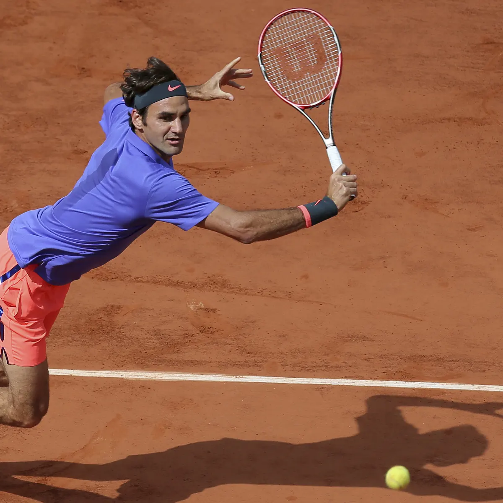

Info About Tennis
How was tennis created?
Tennis was originally created around the 12-13th century, and it was inspired
based on a French handball game called "jeu de paume." In this French game,
the ball was struck with the hand instead of a racuqet. This game was first
played by Europmean monks for entertainment. Later, the leather glove came
into use. Then a handle was added to the glove, which eventually created
the tennis raquet that we know today.

What are the rules?
Tennis is played on a rectangular court, with two game styles: singles and doubles.
In singles, there are 2 people on a court at once, one person on each side. You are
awarded points when your opponent fails to hit the ball back to your side of the
court. This can happen if they hit the ball into the net, or outside of the court
boundaries.

How can you get started with tennis?
Check out some of these websites so you can order racquets, balls, and other tennis equipment!